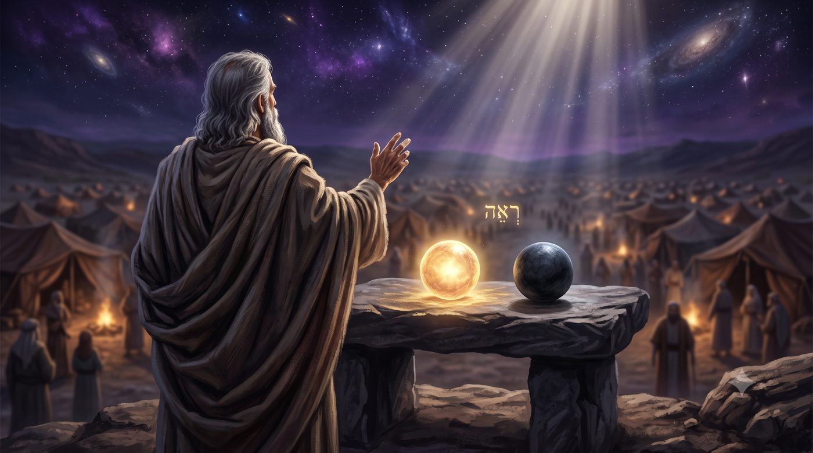
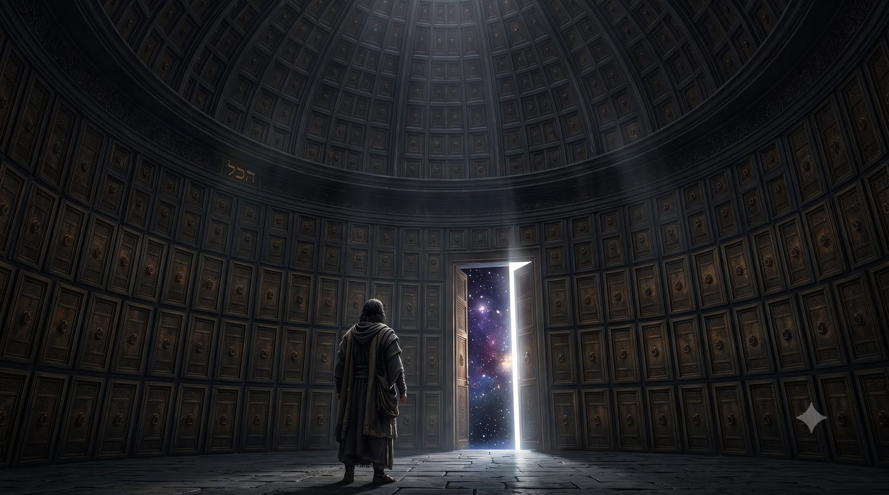
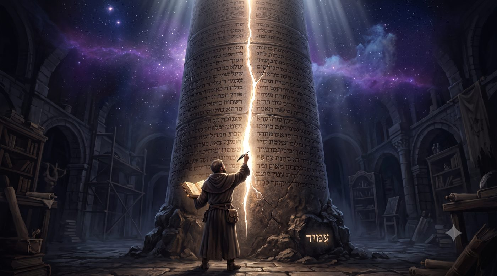
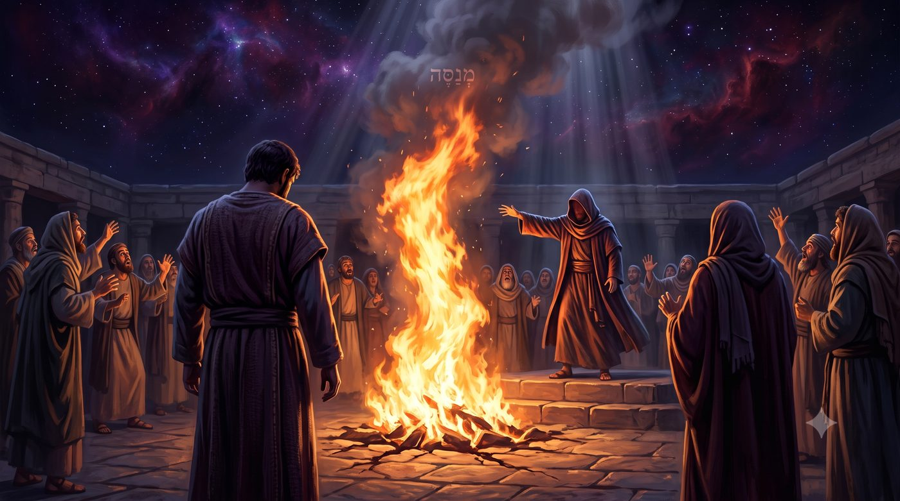
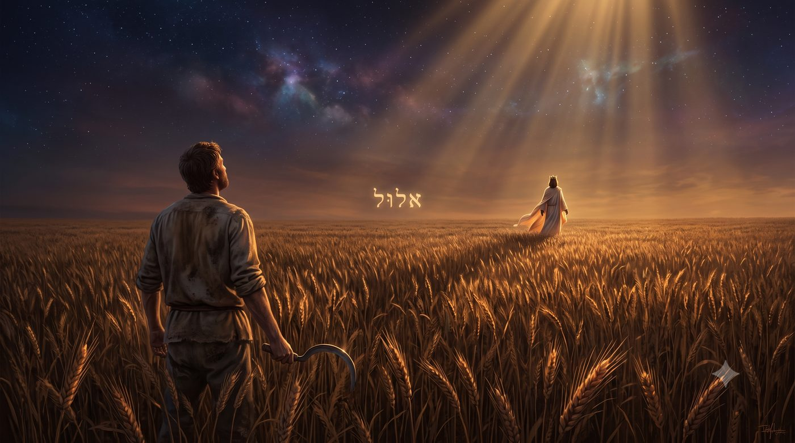

En relisant Réé, une question s’impose : le premier verset que nous citons toujours pour défendre le libre arbitre ne contient pas le verbe « choisir » mais nous invite à “voir”. Ce chiour suit cette anomalie, et analyse ce qu’elle change dans notre manière de comprendre la liberté.
La paracha s’ouvre sur l’injonction de Moché, traditionnellement mobilisée pour affirmer l’existence du libre arbitre. רְאֵה אָנֹכִי נֹתֵן לִפְנֵיכֶם הַיּוֹם בְּרָכָה וּקְלָלָה (Devarim 11:26) : « Vois, je place devant vous aujourd’hui bénédiction et malédiction. » En lisant ce verset, un détail embarrassant s’impose au lecteur : le texte demande de voir et non pas de choisir.
Pourtant, ces six mots contiennent trois irrégularités qui, prises ensemble, rendent la phrase presque impossible à traduire proprement.

La première saute aux yeux dès l'hébreu. רְאֵה (Réé), « vois », est un impératif au singulier. לִפְנֵיכֶם (lifneikhem), « devant vous », est un pluriel. Un seul homme reçoit l'ordre de voir, ce qui est devant une multitude. Les commentateurs classiques ont proposé la lecture qui vient naturellement : le don est collectif, mais le regard est individuel, et nul ne peut regarder à la place d'un autre. Nous y reviendrons, car cette réponse évidemment juste est beaucoup plus complexe qu'elle n'en a l'air.
La deuxième irrégularité est plus discrète. נֹתֵן (noten) est un participe présent. Moché ne dit pas « j'ai placé », il dit « je place », au sens d'une action en cours de réalisation.
La troisième vient renforcer la deuxième : הַיּוֹם (hayom), « aujourd'hui ». La Torah, si avare en encre, insiste deux fois sur le présent, ce qu'elle ne fait jamais sans raison.
Pourtant l'anomalie décisive est ailleurs, et elle est d'un autre ordre. Le verbe בָּחַר (ba'har), « choisir », est absent.
C’est le verset que le Rambam citera comme l’un des piliers du libre arbitre, et que nous reprenons chaque année pour rappeler que notre vie est entre nos mains. Mais le texte ne dit pas de « choisir », il nous invite à « voir ».
On peut évidemment tenir que voir et choisir reviennent au même, et que Moché emploie une figure de style. Nous allons essayer d’étudier l'hypothèse inverse : que la Torah pèse ses verbes, qu'elle n'a pas écrit « choisis » parce qu'elle ne voulait pas l'écrire, et que ce refus nous apprend quelque chose de désagréable mais certainement assez vraie sur l'étendue réelle de notre liberté.
Avec l'aide du Ciel et de nos maîtres, nous allons essayer de comprendre pourquoi est ce que la Torah qui pèse ses mots, n'a pas écrit « choisis », et ce que ce refus nous apprend quelque chose de désagréable sur l'étendue réelle de notre liberté. Nous verrons pourquoi le Rambam, en citant ce verset, a été contraint d'y ajouter une glose ; pourquoi le Rav Dessler soutient que nous ne choisissons presque rien de ce que nous croyons choisir ; pourquoi la Torah admet l’existence d’un faux prophète dont le prodige peut s'accomplir ; et ce qui reste, à la fin, quand on a retiré de la be'hira, du choix, tout ce qui n'en était pas.
• Le verset que l'on cite pour parler de la בְּחִירָה, beh’ira
• Ce qu'Ekev laissait ouvert sur la beh’ira
• Le Rambam pose le pilier, puis ouvre le gouffre de la beh’ira
• Rav Dessler et la ligne de front de la בְּחִירָה
• Le décor de la beh’ira nous est fourni
• La beh’ira des cœurs que l'on ne durcit pas
• Vu d'en haut, il n'y a jamais eu de beh’ira
• Ce que l'illusion de la beh’ira laisse
• Eloul, ou la beh’ira est reconduite chaque jour
• Conclusion : la beh’ira accomplie, non abolie
La semaine dernière, la paracha de Ekev nous a menés jusqu'à l’étude d’une phrase de Rabbi 'Hanina, dans le traité Bera'hot : הַכֹּל בִּידֵי שָׁמַיִם חוּץ מִיִּרְאַת שָׁמַיִם (Hakol bidei shamayim 'houts miyirat shamayim), « tout est entre les mains du Ciel, sauf la crainte du Ciel ».

Nous avions expliqué les tenants et aboutissants de cette maxime : la Crainte. C'est ce que l'on fait toujours avec cette phrase, parce que c'est la partie qui nous flatte. On y entend une promesse de souveraineté : voilà au moins un domaine qui m'appartient, un territoire où personne ne décide à ma place.
Il faut maintenant par honnêteté intellectuelle faire l'inverse et relire la règle en entier : הַכֹּל, « tout » est entre les mains du Ciel. Il n’est pas écrit : « beaucoup de choses, l’essentiel, … les grandes lignes ». Il est écrit « Tout ». Le pays où je vis, la langue dans laquelle je pense, la santé de mon corps, l'argent qui est gagné et dépensé, les personnes que je croise et ceux que je ne croiserai jamais, ceux avec qui je suis proches et les autres, le tempérament que j'ai reçu, la famille qui m'a formé, les études que j’ai faites, les biens que j’ai choisis, … La liste ne s'arrête pas parce qu'elle ne peut pas l’être : c'est le sens du mot, « tout ».
Rabbi H’anina nous enseigne que tout est déjà choisi par le Ciel sauf notre capacité à le craindre.
Nos maîtres défendent pourtant le libre choix, et avec lui la responsabilité humaine. Personne ne l’a fait avec plus de fermeté que le Rambam.
Les Hil'hot Techouva s'ouvrent, au cinquième chapitre, sur une formule sans nuance : רְשׁוּת לְכָל אָדָם נְתוּנָה (rechout lekhol adam netouna), « la permission est donnée à tout homme ».
S'il veut se tourner vers la voie bonne et devenir juste, cela est en son pouvoir. S'il veut se tourner vers la voie mauvaise et devenir méchant, cela est en son pouvoir. Et il enracine cette liberté dans un verset de Bereshit, הֵן הָאָדָם הָיָה כְּאַחַד מִמֶּנּוּ לָדַעַת טוֹב וָרָע (3:22) : l'homme est la seule espèce qui sache par elle-même le bien et le mal, et que rien n'empêche d'accomplir l'un ou l'autre.

Deux paragraphes plus loin, il élève l'enjeu au maximum. Cette affaire, écrit-il, עִקָּר גָּדוֹל הוּא וְהוּא עַמּוּד הַתּוֹרָה וְהַמִּצְוָה, « est un principe majeur, et c'est la colonne de la Torah et de la mitsva ». Puis il apporte ses preuves scripturaires. Il cite le verset de Nitsavim. Et il cite le nôtre, רְאֵה אָנֹכִי נֹתֵן לִפְנֵיכֶם הַיּוֹם. Voici le détail qu'il faut regarder de très près, parce qu'il porte tout le chiour. Immédiatement après avoir cité notre verset, le Rambam ajoute trois mots : כְּלוֹמַר שֶׁהָרְשׁוּת בְּיֶדְכֶם (kelomar chéharechout beyedh’em), « c'est-à-dire que la permission est entre vos mains ».
Le plus grand codificateur de la loi juive, en train d'établir la colonne de tout l'édifice, ne peut pas se contenter de citer le verset : il doit expliquer ce que le verset veut dire. Parce que le verset, lui, dit « vois ». C'est le Rambam qui dit « vous pouvez ». La glose est nécessaire précisément parce que le texte ne suffit pas.
Et le Rambam, qui n'a peur d'aucune question, va lui-même ouvrir la faille. Au cinquième alinéa, il formule l'objection dans sa propre bouche, sans l'adoucir. Si le Saint béni soit-Il sait d'avance qu'un tel sera juste, il est impossible qu'il ne le soit pas ; et si l'on répond qu'Il sait tout en laissant la chose ouverte, alors Il ne sait pas vraiment. Il n'y a pas d'échappatoire élégante à ce dilemme, et il le reconnaît : la réponse à cette question, dit-il, אֲרֻכָּה מֵאֶרֶץ מִדָּה וּרְחָבָה מִנִּי יָם, « est plus longue que la terre en mesure et plus large que la mer ».
Sa solution tient en une distinction métaphysique : chez l'homme, l'être et le savoir sont deux choses, tandis que chez le Créateur, Lui et Son savoir sont un. Nous ne pouvons donc pas concevoir Sa connaissance à partir de la nôtre, pas plus que nous ne pouvons Le concevoir Lui. Le prophète l'a dit : כִּי לֹא מַחְשְׁבוֹתַי מַחְשְׁבוֹתֵיכֶם, « Mes pensées ne sont pas vos pensées ».
L’immense maître qui a fait de la be'hira la colonne de la Torah a dû gloser son verset de preuve, a formulé lui-même l'objection qui la perturbe, et a conclu que la résolution de cette objection (D.ieu sait tout ce que nous allons choisir à l’avance) dépasse l'entendement humain.
Le libre arbitre repose sur un principe que son plus grand défenseur a déclaré incompréhensible.
Il faut maintenant quitter la métaphysique et descendre dans la vie de l’homme, suivons le Rav Éliyahou Dessler dans le Mikhtav MeÉliyahou, au traité qu'il consacre à la question, le Kountras HaBe'hira. Sa thèse ne discute pas de la prescience divine. Elle demande simplement, “où, dans ta journée, as-tu réellement choisi ?”
Sa réponse tient dans une image militaire. Deux armées se font face. Le combat n'a lieu ni à l'arrière des lignes ni au-delà de la portée des armes : il a lieu sur une bande étroite, le front, seul endroit où l'issue est indécise. Derrière ce front, le terrain est tenu, il n'y a plus rien à disputer. Devant, le terrain est hors d'atteinte, et vouloir s'y battre n'a aucun sens.
Chaque homme a son point de beh’ira, נְקֻדַּת הַבְּחִירָה (nekoudat ha-be’hira). C’est là seulement que le mot « choix » possède un contenu concret.
Prenons la mesure des choses. Un homme qui a grandi dans une maison où l'on mange cachère ne choisit pas, à midi, de ne pas manger de porc. Il ne lutte pas, il ne délibère pas, il ne remporte aucune victoire. La question ne se pose pas à lui. Ce comportement est derrière son front, en territoire acquis, et il l'a reçu bien plus qu'il ne l'a gagné. Compter cela comme un mérite serait comme décorer un soldat pour une ville prise vingt ans avant sa naissance.
Symétriquement, un homme élevé loin de toute pratique ne choisit pas non plus de ne pas garder Chabbat demain. Cette possibilité ne se présente pas à sa conscience comme une option ouverte, elle est hors de portée, au-delà du front. Le lui reprocher n'aurait pas plus de sens que de reprocher à une armée de ne pas avoir conquis un continent qu'elle ignore.
Ce que nous appelons couramment nos décisions se répartit donc presque entièrement en deux catégories, et ni l'une ni l'autre n'est un choix. Ce qui est acquis tourne tout seul. Ce qui est inaccessible ne vient même pas à l’esprit. Entre les deux, une bande fine, mobile, souvent réduite à quelques situations par jour, parfois à une seule.
Voilà l’illusion qu’il faut nommer sans exagérer : je crois choisir partout, alors que je ne choisis qu’à un point précis. Je m’attribue une souveraineté sur un territoire dont je ne tiens réellement qu’un petit segment.
Cette image a deux prolongements que Rav Dessler tire lui-même, et qui empêchent d'en faire une doctrine de découragement.
Le premier : le front se déplace. Un point tenu une fois reste difficile. Tenu dix fois, il devient moins coûteux. Tenu cent fois, il passe derrière la ligne et cesse d'être un lieu de combat, ce qui libère la ligne pour s'établir un cran plus loin, sur un terrain qui, la veille encore, était hors de portée. La progression spirituelle ne consiste donc pas à faire davantage de choix, mais à déplacer l'unique endroit où le choix se joue. Et le mouvement fonctionne dans les deux sens : un point abandonné plusieurs fois entraîne un recul, et ce qui exigeait hier un combat devient un automatisme dans la mauvaise direction.
Le second prolongement porte sur le regard que nous posons sur les autres, et c'est peut-être la conséquence pratique la plus lourde de tout ce chiour. Le front d'autrui est invisible. Je vois ses actes, je ne vois pas où passe sa ligne. Un homme dont la conduite paraît irréprochable peut n'avoir livré aucun combat, parce que tout ce qu'il fait est situé derrière son front. Un autre, dont la conduite paraît médiocre, peut mener chaque matin une bataille dont je n'ai pas idée, et l'emporter sur le seul mètre carré qui lui soit disputé. Les deux hommes sont jugés sur leur ligne, pas sur la carte.
Ce qui vaut d'ailleurs pour soi-même. Il est très difficile de savoir où passe son propre front, parce que nous avons intérêt à le situer plus loin qu'il n'est.
Et il faut ajouter la clause qui achève le raisonnement, celle que l'on oublie toujours de tirer. Ce point, je ne l'ai pas placé. L'endroit précis où passe mon front, c'est-à-dire l'ensemble de ce qui m'est devenu naturel et de ce qui m'est resté impensable, a été déterminé par ma naissance, mon éducation, mon tempérament, les épreuves reçues, les maîtres rencontrés, les livres tombés entre mes mains. Rien de tout cela n'a été choisi, je peux opérer des choix sur une ligne dont je n'ai tracé aucun mètre.
C'est très exactement הַכֹּל בִּידֵי שָׁמַיִם, la totalité, avec sa seule exception : le point critique, la crainte du Ciel où je dois me battre.
Nous ne choisissons pas mille fois par jour. Nous choisissons une fois, sur une ligne que nous n'avons pas tracée.
Au chapitre treize, la Torah aborde un cas de figure exceptionnel, celui du faux prophète.
כִּי יָקוּם בְּקִרְבְּךָ נָבִיא אוֹ חֹלֵם חֲלוֹם וְנָתַן אֵלֶיךָ אוֹת אוֹ מוֹפֵת (13:2), « s'il se lève au milieu de toi un prophète ou un songeur de songe, et qu'il te donne un signe ou un prodige ». Jusqu'ici, rien d'inattendu, un imposteur annonce un miracle et nous attendons la suite naturelle : “et le miracle n'arrivera pas, et tu sauras qu'il ment”. C'est ainsi que devrait se terminer toute fausse prophétie. Mais le verset suivant dit autre chose. וּבָא הָאוֹת וְהַמּוֹפֵת אֲשֶׁר דִּבֶּר אֵלֶיךָ (13:3), « et le signe et le prodige arrivent, celui dont il t'a parlé ».

La Torah ne dit pas que le charlatan sera confondu par les faits. Elle dit que les faits lui donneront raison, le signe s'accomplit. L'homme qui vient détourner le peuple d’Israel, dispose d'une puissance réelle, et cette puissance produit ce qu'elle promet. Le verset qui suit livre la raison : כִּי מְנַסֶּה ה' אֱ-לֹהֵיכֶם אֶתְכֶם לָדַעַת הֲיִשְׁכֶם אֹהֲבִים אֶת ה' אֱ-לֹהֵיכֶם בְּכָל לְבַבְכֶם (13:4), « car Hachem votre D.ieu vous met à l'épreuve, pour savoir si vous L'aimez de tout votre cœur ». Loin d'être un accident dans le système, le décor de l'épreuve est monté par Celui qui éprouve. Tirons-en la conséquence sur notre sujet, car elle est considérable et elle vient s'ajouter à celle du chapitre précédent.
Nous avons vu que nous ne choisissons presque aucun de nos actes : la plupart relèvent de l’acquis ou de l’inaccessible. Ici, le texte va plus loin : même les options entre lesquelles nous hésitons ne sont pas fabriquées par nous. Elles nous sont présentées, et la force de leur séduction est mesurée. Sans cela, l’épreuve ne serait qu’un simulacre.
Un monde où le mensonge échouerait toujours, où l'imposture porterait sa marque sur le front, où la voie erronée serait visiblement moins attirante que la vraie, serait un monde parfaitement moral, et ce serait aussi un monde vide de l’homme, personne n'y choisirait rien, puisque personne n'y hésiterait. La Torah tient à l'homme, donc elle tient à son hésitation, et elle accepte que le faux-prophète dispose d'armes réelles.
Non seulement je ne choisis pas la plupart de mes actes, mais je ne choisis pas non plus les options entre lesquelles j'hésite.
Il serait facile de conclure de tout cela à une forme de résignation confortable. Si mon champ d'action se réduit à un point, autant se laisser porter. C'est le contresens exact, et la Torah le bloque au chapitre quinze, dans une formulation qu'il faut lire mot à mot.
לֹא תְאַמֵּץ אֶת לְבָבְךָ וְלֹא תִקְפֹּץ אֶת יָדְךָ מֵאָחִיךָ הָאֶבְיוֹן (15:7), « tu n'endurciras pas ton cœur et tu ne fermeras pas ta main devant ton frère pauvre ».
Observons l'ordre des mots. La mitsva ne commence pas par « donne ». Elle commence par une interdiction portant sur un mouvement intérieur, l'endurcissement, et ce n'est qu'ensuite qu'elle passe à la main. Entre le moment où je vois le pauvre et le moment où je donne, il existe un intervalle. C'est là, dans cet intervalle, que la Torah légifère.
Autrement dit, la Torah situe la mitsva exactement à l'endroit où Rav Dessler situe le point de be'hira. Pas au carrefour spectaculaire, pas dans la grande délibération morale que l'on imagine quand on parle de libre arbitre. Dans la seconde où la main hésite au-dessus de la poche, où quelque chose se raidit dans la poitrine et où une raison très raisonnable commence à se former. Dans cette seconde d’hésitation qui devient la totalité de l’empire de la conscience humaine.
Nous avons en tête le contre exemple de Pharaon, qu'il serait malhonnête de contourner. וַאֲנִי אַקְשֶׁה אֶת לֵב פַּרְעֹה (Chemot 7:3), « et moi j'endurcirai le cœur de Pharaon ». Le Ciel "intervient et confisque la capacité de choix de Pharaon mais comment cet homme peut-il être jugé pour une obstination qui lui a été imposée ?
La réponse classique est connue : durant les cinq premières plaies, le texte est formel, c'est Pharaon qui endurcit son propre cœur. Le retrait n'arrive qu'ensuite, à titre de sanction et non de manœuvre préalable. À force de refuser de voir, il a perdu la capacité de voir. Le Ciel a ratifié un durcissement qu'il avait lui-même fabriqué.
Le Rambam a traité ce cas de front, quelques pages après son chapitre sur la be'hira. Il y explique qu'une faute peut être assez grave pour que la possibilité même de revenir soit retirée au fauteur, afin qu'il meure dans la faute qu'il a commise volontairement, et il cite Pharaon comme l'exemple type. Le raisonnement est cohérent : la capacité de faire Techouva fait partie des dons, donc elle peut être reprise comme tout don. Mais il faut mesurer ce que le Rambam concède ici. L'auteur qui écrivait que le Créateur ne contraint personne à rien, admet qu'il existe un régime où Il retire l'accès au choix. L'exception est donc reconnue par celui-là même qui a bâti la règle.
Mais notre lecture veut tirer de cet épisode autre chose que la réponse classique. Si la be'hira peut être retirée, alors elle n'a jamais été une propriété. Ce qui peut être repris n'appartenait pas, il était prêté. Le cas de Pharaon est présenté comme une exception, comme la seule fois où le Ciel confisque ouvertement. Une exception ouverte ne prouve pourtant qu'une chose sur la règle : que la même opération, ailleurs, se fait discrètement.
Ce que je prends pour ma liberté est un dépôt. Et le verset d'ouverture le disait déjà par sa grammaire, avec ce נֹתֵן au participe présent que nous avions laissé de côté. Il place, et continue de placer perpetuellement la liberté humaine.
Une liberté qui peut être retirée n'a jamais été une possession, seulement un dépôt reconduit chaque matin.
La Torah, dans ce même livre de Devarim, a posé la formule la plus radicale de tout le Tana'h : אֵין עוֹד מִלְּבַדּוֹ (4:35), « il n'y a rien d'autre que Lui ». Non pas « pas d'autre d.ieu », ce qui serait une affirmation d'exclusivité mais “Rien d'autre”. Or, s'il n'y a rien d'autre que Lui, ma décision de ce matin est-elle quelque chose d'autre que Lui ?
C'est ici qu'il faut avancer avec le mécanisme mystique que ce chapitre développera, celui du tri. Le Ari Z"L enseigne que la lumière première, en se retirant pour laisser place au monde, a laissé partout des étincelles retenues dans des enveloppes de matières. Le travail de l'homme consiste à opérer un tri, בֵּרוּר (birour), à relever ce qui peut l'être et à laisser ce qui ne le peut pas. Chaque acte trie. Manger, parler, donner, se retenir : à chaque geste, quelque chose est relevé ou abandonné, que ce soit pour une mitsva ou une action a priori banale.
Dans cette description, le choix devient le lieu du tri. L’étincelle attendait précisément cette rencontre, cette pièce, cette hésitation. Mon acte devient le passage par lequel elle remonte. C’est à la fois immense, car mes gestes entrent dans la réparation du monde mais aussi désappropriant, je ne décide pas de l’ouvrage, je suis l’instrument d’un travail qui me dépasse.
Une légitme objection se lève ici. Si tout est décrété, à quoi bon maintenir en nous le sentiment de choisir ? Pourquoi une illusion, dans un monde dont on nous enseigne qu'il est ordonné jusque dans le détail ?
Le Ramhal a répondu à cette question au tout début du Dere’h Hachem. Le but de la création, écrit-il, est que la créature reçoive le bien. Mais un bien reçu sans avoir été gagné ne se reçoit pas entièrement : celui qui le reçoit en éprouve une gêne, que la tradition appele “le pain de la honte”. Le mendiant qui mange à la table d'un autre mange bien, et pourtant quelque chose en lui n’est pas rassasié. Pour que le don soit complet, il fallait que l'homme puisse le mériter. Pour qu'il puisse le mériter, il fallait qu'il y ait un travail. Et pour qu'il y ait un travail, il fallait un endroit où l'issue ne soit pas écrite d'avance, ou du moins ne le paraisse pas.
L’illusion est donc la clé de voûte du système : elle rend possible un bien qui soit reçu comme un mérite, et non comme une simple distribution. La beh’ira fabrique la paroi du récipient capable de contenir le bien que D.ieu veut déverser.
La tradition a formulé ce double étage dans un enseignement de la morale juive très connu : Avant l'acte, comporte-toi comme si tout dépendait de toi; après l'acte, sache que tout venait de Lui. Il s'agit de deux points de vue sur le même événement, non de deux opinions dont il faudrait choisir la bonne, et l'ordre entre eux est impératif. Inverser les étages produit les deux maladies bien connues de la vie spirituelle : croire avant l'acte que tout est décrété, ce qui paralyse ; croire après l'acte que tout venait de soi, ce qui gonfle l’égo.
Rabbi Akiva l'avait affirmé dans les Pirkei Avot : הַכֹּל צָפוּי וְהָרְשׁוּת נְתוּנָה (3:15), « tout est vu d'avance, et la permission est donnée ».
La Michna ne résout pas la contradiction, elle pose les deux étages dans la même phrase, tout est vu d’avance הַכֹּל צָפוּי pour celui d'en haut, et la permission est donnée וְהָרְשׁוּת נְתוּנָה pour celui d'en bas, pour l’homme qui hésite avec crainte avant d’agir.
Le verset d'ouverture nous attendait là depuis le début. רְאֵה. Vois.
La Torah ne dit pas « choisis » parce que le choix, au sens courant, n’est peut-être pas ce qu’elle nous demande en premier. Nous ne plaçons pas la bénédiction ; elle est déjà placée, נֹתֵן, au présent. Nous ne fabriquons pas les options et nous ne choisissons pas le terrain du combat. Alors que reste-t-il ?
Il reste l’opération que personne ne peut faire à ma place : regarder ce qui est devant moi et le voir pour ce que c’est.
Et l'anomalie grammaticale du premier verset, celle par laquelle nous avons commencé, se dénoue exactement ici. לִפְנֵיכֶם, devant vous, au pluriel, parce que le dépôt a été fait pour tous, sans consulter personne, également disponible pour chacun. רְאֵה, vois, au singulier, parce que le regard ne se délègue pas.
Cette liberté-là, celle du regard, c'est mot pour mot la crainte du Ciel de Rabbi 'Hanina. יִרְאַת שָׁמַיִם (yirat shamayim), et le mot יִרְאָה (yira) partage sa racine avec רְאִיָּה (reïya), la vision. Craindre le Ciel, dans ce vocabulaire, c'est d'abord voir devant Qui l'on se tient. Le seul domaine que Rabbi 'Hanina soustrait au décret est un domaine de perception, et le seul verbe que Moché emploie à l'ouverture de Réé est un verbe de perception.
Si la seule chose qui échappe au décret est la crainte du Ciel, c'est parce que la seule chose qui échappe au décret est le regard que nos consciences posent sur les évenements en ayant conscience que tout le reste, y compris le contenu de nos choix apparents, appartient au Divin.
On ne nous demande pas de placer la bénédiction. On nous demande de voir qu'elle est déjà posée.
Reste à comprendre pourquoi ce chiour tombe précisément ce Chabbat, et le calendrier répond mieux que nous.

Ce Chabbat 25 Av est le Chabbat qui bénit le mois d'Eloul. Réé se lit toujours à cette charnière, à l'instant où l'année bascule vers les 40 jours de jugement qui vont nous mener à yom kippour. Et c’est certainement pour cela que Moché double l’indication du présent par הַיּוֹם, aujourd'hui.
Car l’illusion doit être reconduite. Si nous voyions à chaque instant, avec une évidence totale, que tout est décrété, plus personne ne tiendrait son point de combat. Eloul rend cette reconduction perceptible : le mois où nous croyons enfin devenir acteurs de notre changement commence par une proximité qui vient à nous.
L'enseignement hassidique de Rabbi Chnéor Zalman, dans le Likouté Torah, décrit ce mois par l'image du roi qui sort dans le champ. Le reste de l'année, l'accès au palais est réglé par un protocole que tout le monde ne peut pas franchir. En Eloul, le roi quitte la ville, traverse les champs, et chacun peut s'approcher de lui, dans ses vêtements de travail, sans audience préalable.
On retient d'ordinaire de cette image la proximité. Notre sujet oblige à en retenir autre chose, qui est dans la structure même de la parabole. C'est le roi qui sort. Le paysan n'a pas obtenu l'audience, il ne l'a pas demandée, il ne l'a pas méritée par une démarche. Elle lui est apportée sur son lieu de travail. Même la saison de la Techouva, même le mois où nous nous croyons enfin acteurs de notre changement, commence par un déplacement dont l'initiative n'est pas la nôtre. Ce qui reste au paysan, dans le champ, est exactement ce que Réé a isolé : et il nous suffit de lever la tête, pour voir le roi qui passe.
Même le mois du retour, de la techouva commence par un pas que nous n'avons pas fait.
Que deviennent nos choix dans le monde à venir. Ze'haria annonce le jour où יִהְיֶה ה' אֶחָד וּשְׁמוֹ אֶחָד (14:9), « Hachem sera un et Son Nom sera un ». Nos maîtres ont relevé l'étrangeté de la formule : Il est déjà un, la Torah le proclame chaque jour. Ce qui n'est pas encore un, c'est le Nom, c'est-à-dire la manière dont Il se manifeste dans le monde, aujourd'hui encore partagée entre ce qui apparaît comme bénédiction et ce qui apparaît comme malédiction.
Ce jour-là, בְּרָכָה וּקְלָלָה cesseront d'être deux objets posés côte à côte sur la table du premier verset. On verra qu'il n'y en avait qu'un, et que la seconde branche était la première, vue depuis un endroit d'où l'on ne voyait pas bien.
Ce qui tombera alors, ce ne sera pas la beh’ira, mais l’illusion sur son étendue. Nous découvrirons que la plupart de ce que nous comptions comme nos décisions nous avait été donné, préparé, amené jusqu’à la porte. Et nous verrons en même temps que le peu qui était vraiment nôtre, ce point où nous avons levé les yeux avec crainte, portait tout le reste.
C'est pourquoi la Torah finit tout de même par dire « choisis ». Elle le dit dans Nitsavim, à la toute fin du livre, une fois que Réé a appris à voir. L'ordre entre les deux verbes n'est pas indifférent : on ne choisit rien qu'on n'ait d'abord vu, et celui qui a vraiment vu a déjà presque choisi.
Nous n’avons pas la main sur tout ce qui est placé devant nous. Nous avons la main sur le fait de le regarder, de prendre conscience, de mesurer avec crainte la toute puissance du Créateur. C’est peu, et c’est précisément ce que le Ciel a réservé à l’homme.
| הַחַיִּים וְהַמָּוֶת נָתַתִּי לְפָנֶיךָ הַבְּרָכָה וְהַקְּלָלָה וּבָחַרְתָּ בַּחַיִּים לְמַעַן תִּחְיֶה אַתָּה וְזַרְעֶךָ | La vie et la mort, j'ai placé devant toi la bénédiction et la malédiction : et tu choisiras la vie, afin que tu vives, toi et ta descendance. |
Devarim 30:19
Chabbat Chalom !
Par B.A., à Saint-Mandé, 25 Av 5786 / 8 août 2026
Yehi Ratson - Que nous soit donnée la lucidité de reconnaître tout ce que nous n'avons pas choisi, et de cesser d'en tirer fierté.
Et qu'en ce mois d'Eloul, quand le Roi passera dans le champ, nous ayons seulement la présence d'esprit de lever la tête.
| Torah | Talmud |
| Devarim 11:26-28, l'ouverture de la paracha, רְאֵה au singulier et לִפְנֵיכֶם au pluriel ; 13:2-4, le faux prophète dont le signe s'accomplit et כִּי מְנַסֶּה ; 15:7, לֹא תְאַמֵּץ אֶת לְבָבְךָ ; 30:19, וּבָחַרְתָּ בַּחַיִּים ; 4:35, אֵין עוֹד מִלְּבַדּוֹ ; Bereshit 3:22, לָדַעַת טוֹב וָרָע ; Chemot 7:3, l'endurcissement du cœur de Pharaon ; Zekharia 14:9, יִהְיֶה ה' אֶחָד וּשְׁמוֹ אֶחָד | Bera'hot 33b, Rabbi 'Hanina, הַכֹּל בִּידֵי שָׁמַיִם חוּץ מִיִּרְאַת שָׁמַיִם |
| Michna | Rishonim |
| Pirkei Avot 3:15, Rabbi Akiva, הַכֹּל צָפוּי וְהָרְשׁוּת נְתוּנָה | Rambam, Hil'hot Techouva 5:1, רְשׁוּת לְכָל אָדָם נְתוּנָה ; 5:3, עִקָּר גָּדוֹל et la glose כְּלוֹמַר שֶׁהָרְשׁוּת בְּיֶדְכֶם ; 5:5, le paradoxe de la prescience, אֲרֻכָּה מֵאֶרֶץ מִדָּה ; Raavad, hassaga sur Hil'hot Techouva 5:5 |
| Mystique | Hassidout |
| Le Ari Z"L, le tri des étincelles, בֵּרוּר ; Ramhal, Derekh Hachem I, sur la finalité d'un monde à mériter | Rabbi Chnéour Zalman de Liadi, Likouté Torah, Réé, le roi dans le champ ; Rav Éliyahou Dessler, Mikhtav MeÉliyahou I, Kountras HaBe'hira, la נְקֻדַּת הַבְּחִירָה |